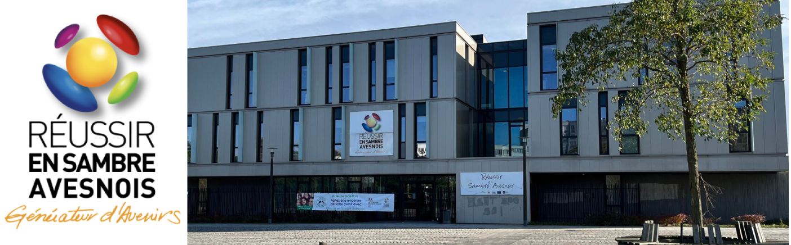
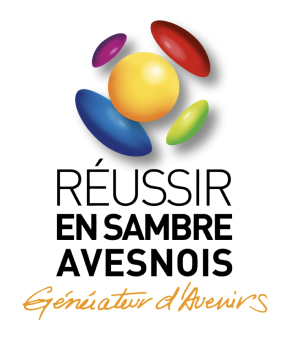

Labellisée en phase Projet par Universcience- Cité des sciences et
de l'industrie*, le projet de Cité des Métiers répond à un besoin de
conseil et de guidance des publics dans la connaissance des métiers,
des formations et de la construction des avenirs professionnels.
26 Cités CDM composent le réseau international des Cités des Métiers
sur 3 principes fondateurs et intangibles :
- libre accès - gratuité – anonymat
L’idée était simple : répondre dans un même lieu à tous les publics,
quels que soient leur statut et leurs âges sur les questions liées à
leur avenir professionnel tout au long de leur vie.
https://www.reseaucitesdesmetiers.org/histoire-du-reseau
Pour essayer le concept, la Cité des Métiers de Sambre Avesnois a
fonctionné en mode éphémère le samedi 11 décembre 2021.
Le matin, une trentaine de partenaires ont pris part aux échanges
sur l'opportunité d'une Cité des Métiers en Sambre Avesnois et en
présence des élus Benjamin Saint-Huile, Président de la CAMVS,
Stéphane Wilmotte Président de Réussir en Sambre Avesnois, Maire de
Hautmont et VP à l'emploi à la CAMVS, et Marie Paule Rousselle,
Maire de Bersillies, élue communautaire, conseillère départementale
et administratrice du GIP RESA.
Monsieur Patrick Cogneaux pour l' UFA Ste Bernadette
Monsieur Bernard Butin Président du Greta Grand Hainaut
Monsieur Laurent Dagneau du CFA Académique
Monsieur Mathieu Baas de CFA Formation Plus
Madame Sabine Briendo du CFA Jean Bosco
Madame Fanny Volkaert du CFA jean Bosco
Monsieur Xavier Lacaille représentant le Cotess Sambre Avesnois
Monsieur Francois Fernandez Directeur de Pôle emploi agence Gare
Maubeuge
Monsieur Benjamin Dacquet de la CMA
Monsieur Alain Duciel de la CMA et administrateur à Réussir en
Sambre Avesnois
Madame Dorothée Cochart de l’ Arep Ste bernadette
Monsieur Nicolas Guignette vDirecteur de la BGE
Monsieur Denis Lesueur de l' UPHF
Monsieur Eric Leleu représentant la région et le dispositif
Proch’orientation
Monsieur Philippe Moreel de Tertia CCI
Madame Nadia Guemra du Greta
Nous les remercions chaleureusement

L'après-midi, 50 personnes se sont présentées pour exprimer des
questionnements très divers :
Public en manque de confiance, en majorité en quête d’informations,
d’échanges ou simplement d’écoute, jeune en recherche d’orientation
scolaire postbac, ou jeune en recherche d’une formation adéquate ou
d'une alternance, en passant par le monsieur sortant de prison qui
avait beaucoup de demandes et qui est passé par tous les espaces
proposés, enfin surtout beaucoup de jeunes perdus qui ne savent pas
vers quels métiers se tourner.
Un jeune en DUT mesures Physiques qui ne savait pas quoi faire avec
cette formation, une jeune fille en seconde générale qui souhaitait
travailler dans les métiers du sport mais pas exactement comment s'y
prendre, une jeune fille avec un CAP petite enfance qui souhaitait
des renseignements sur la création d’une crèche itinérante...
Concept original d'accueil et de conseil sur les questions
d'orientation, de découverte des métiers, et d'information sur les
moyens d'y accéder, une Cité des Métiers fonctionne sur la mise à
disposition et la mise en commun des ressources de partenaires. Sans
étiquette, les professionnels vous reçoivent et vous donnent les
informations dont vous avez besoin pour décider de votre
trajectoire. Scolaires, salarié(e)s, étudiant(e )s, chef(fe)s
d'entreprises, tous sont les bienvenus.
5 pôles seront créés : Choisir son orientation, organiser son
parcours de formation, trouver un emploi, créer son activité,
prévoir ses déplacements.
Le Projet de Sambre Avesnois a deux marraines, les Cité des Métiers
de Bruxelles et de Beauvais. Réussir en Sambre Avesnois vise
dorénavant le label Préfiguration* qui construira le projet plus en
détail, là où la phase actuelle a réuni des énergies et les soutiens
d'un premier cercle d'engagés.